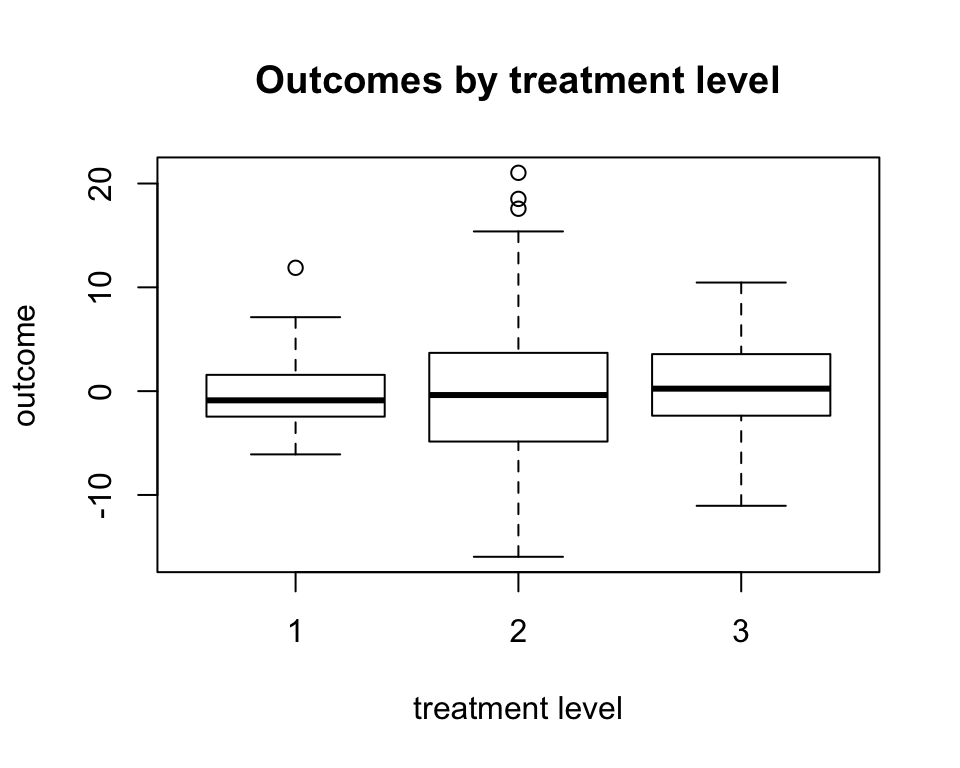

multilevelMatching-v1.0.0.RmdMain Paper: Yang et al. (2016):
Visit the package website
In setting with where 3 or more levels of treatment (i.e., multilevel treatment), our goal is to estimate pairwise average treatment effects from a common population using matching methods.
This goal can not be acheived by matching one treatment with another one at a time, since the pairwise matched samples may differ from the target population systematically, and thus they are not compatitable. One implication is that from this approach, it is possible that treatment A is better than treatment B, treatment B is better than treatment C, and treatment C is better than treatment A.
We focus on estimating the average values of potential outcomes for each treatment level by matching methods, which facilitate estimation of pairwise average treatment effects for a common population.
The estimation methods include generalized propensity score (GPS) matching, GPS stratification, matching with the full set of covariates, matching with the full set of GPS vector. Note that GPS matching and GPS straticication only require matching on a scalar function when estimating the average value of the potential outcome at a particular treatment level, which reduces the matching dimension to one, regardless of the number of covariates and the number of treatment levels.
In order to ensure sufficient overlap, Crump et al. (2009)’s trimming method can be extended to this setting as well.
multilevelGPSStratification().| S3 Class? | Covariate Matching Function | Propensity Score Matching Function | |
|---|---|---|---|
| no | multilevelMatchX() |
multilevelGPSMatch() |
|
| Yes! | multiMatch() |
multiMatch() |
As of version 1.0.0, the combination of multilevelMatchX() and multilevelGPSMatch() can carry out the same estimation as multiMatch(). The multiMatch() function was added to standardize some of the inputs, include more tests and checks, and provides more verbose output with S3 class "multiMatch". We receommend using multiMatch() for these and other reasons.
We will use the dataset provided with this package
library(multilevelMatching)
simulated_data <- multilevelMatching::simulated_data
knitr::kable(head(simulated_data), digits = 2)| outcome | treatment | covar1 | covar2 | covar3 | covar4 | covar5 | covar6 |
|---|---|---|---|---|---|---|---|
| -5.13 | 1 | -0.87 | 0.24 | 0.23 | -2.89 | 0.21 | 0 |
| -3.03 | 1 | 0.27 | -0.35 | -0.40 | -2.21 | 0.07 | 1 |
| 3.05 | 1 | 1.42 | 1.32 | -1.20 | 0.06 | 1.26 | 1 |
| -6.09 | 1 | -1.39 | -1.07 | 1.12 | -2.36 | 0.00 | 0 |
| -2.46 | 1 | -1.15 | 0.95 | 0.51 | -2.68 | 0.07 | 0 |
| -0.32 | 1 | 0.27 | 0.42 | -0.45 | 2.43 | 0.60 | 0 |
boxplot(
outcome ~ treatment,
data = simulated_data,
xlab = "treatment level",
ylab = "outcome",
main = "Outcomes by treatment level"
)
As of version 1.0.0, this package does not support the use of formulas-and-dataframes for specifying the variables. Note that using a factor variable for the treatment vector should be avoided, also. We restructure the data in this manner:
outcome <- simulated_data$outcome
treatment <- simulated_data$treatment
covar_matrix <- as.matrix(
simulated_data[ ,names(simulated_data) %in% paste0("covar", 1:6)]
)Naming the rows of the covariate matrix, or the entries of the outcome or treatment variables, with ID numbers for the observations provides nice functionality with inspecting output from multiMatch(). Here we create some unique ID’s:
identifying_names <- paste0(
rep(letters[1:25],each = 12),
rep(letters[1:25], 12)
)
(
length(identifying_names) ==
length(unique(identifying_names))
) &&
(
length(identifying_names) ==
NROW(simulated_data)
)
#> [1] TRUEAny of the following can be done:
# names(outcome) <- identifying_names
names(treatment) <- identifying_names
# rownames(covar_matrix) <- identifying_namesWe present both manners of performing this matching
multilevelMatchX()
set.seed(123)
fit1 <- multilevelMatchX(
Y = outcome,
W = treatment,
X = covar_matrix
)which provides the following output:
fit1
#> $tauestimate
#> EY(2)-EY(1) EY(3)-EY(1) EY(3)-EY(2)
#> 0.07927361 0.86264929 0.78337567
#>
#> $varestimate
#> EY(2)-EY(1) EY(3)-EY(1) EY(3)-EY(2)
#> 0.1792186 0.1634754 0.3221616multiMatch()
For this example, multiMatch() requires only one additional argument, which is `match_on = “covariates”.
set.seed(123)
fit2 <- multiMatch(
Y = outcome,
W = treatment,
X = covar_matrix,
match_on = "covariates"
)which is an S3 object of class:
class(fit2)
#> [1] "multiMatch"The print.multiMatch() method looks similar to before:
print(fit2)
#> -------------- Causal estimates ---------------
#> Param Trt1 Trt2 Estimate Variance
#> 1 EY(2)-EY(1) 1 2 0.07927361 0.1792186
#> 2 EY(3)-EY(1) 1 3 0.86264929 0.1634754
#> 3 EY(3)-EY(2) 2 3 0.78337567 0.3221616
#> --- Matching on 'covariates' with M=1, J=1 ---but there is a lot more information available now:
summary(fit2)
#> ------------- Method arguments --------------
#> $match_on
#> [1] "covariates"
#>
#> $model_options
#> $model_options$reference_level
#> aa
#> 1
#>
#>
#> $M_matches
#> [1] 1
#>
#> $J_var_matches
#> [1] 1
#>
#> $trt_levels
#> [1] 1 2 3
#>
#> $N_per_trt
#> W
#> 1 2 3
#> 100 100 100
#>
#> ------------- Causal estimates --------------
#> Param Trt1 Trt2 Estimate Variance
#> 1 EY(2)-EY(1) 1 2 0.07927361 0.1792186
#> 2 EY(3)-EY(1) 1 3 0.86264929 0.1634754
#> 3 EY(3)-EY(2) 2 3 0.78337567 0.3221616
#> ---------------------------------------------and more output that may be useful for inspecting the method:
names(fit2)
#> [1] "results" "analysis_idx" "mu"
#> [4] "impute_mat" "estimate_args" "model"
#> [7] "propensity_scores" "impute_match_data" "impute_mat_sorted"For example, we can inspect the imputed potential outcomes of each observation:
| 1 | 2 | 3 | |
|---|---|---|---|
| aa | -5.13 | -9.11 | 3.54 |
| ab | -3.03 | -3.81 | 2.00 |
| ac | 3.05 | 3.63 | 4.66 |
| ad | -6.09 | -12.03 | 3.54 |
| ae | -2.46 | -7.69 | 0.19 |
| af | -0.32 | 8.09 | -2.37 |
multilevelGPSMatch()
Propensity scores can be estimated with either of the following options
GPSM="multinomiallogisticReg" for multinomial logistic regression from nnet::multinom()
GPSM="ordinallogisticReg" for ordinal logistic regression from MASS::polr()
X argument when GPSM="existing"
In order to ensure sufficient overlap, Crump et al. (2009)’s trimming method can be extended to this setting as well.
# GPSM <- "multinomiallogisticReg"
GPSM <- "ordinallogisticReg"
# GPSM <- "existing"
set.seed(123)
fit1 <- multilevelGPSMatch(
Y = outcome,
W = treatment,
X = covar_matrix,
GPSM = GPSM,
Trimming = FALSE
)
rbind(Estimate = fit1$tauestimate, Variance = fit1$varestimate)
#> EY(2)-EY(1) EY(3)-EY(1) EY(3)-EY(2)
#> Estimate -0.730381 0.3711491 1.1015301
#> Variance 0.726145 0.5966005 0.9743341multiMatch()
Propensity scores can be estimated with either of the following options - match_on="multinom" for multinomial logistic regression from nnet::multinom() - match_on="polr" for ordinal logistic regression from MASS::polr() - Or, estimated propensity scores can be supplied via the X argument when match_on="existing"
set.seed(123)
fit2 <- multiMatch(
Y = outcome,
W = treatment,
X = covar_matrix,
match_on = "polr",
trimming = FALSE
)
summary(fit2)
#> ------------- Method arguments --------------
#> $match_on
#> [1] "polr"
#>
#> $model_options
#> $model_options$reference_level
#> aa
#> 1
#>
#>
#> $M_matches
#> [1] 1
#>
#> $J_var_matches
#> [1] 1
#>
#> $trt_levels
#> [1] 1 2 3
#>
#> $N_per_trt
#> W
#> 1 2 3
#> 100 100 100
#>
#> ------------- Causal estimates --------------
#> Param Trt1 Trt2 Estimate Variance
#> 1 EY(2)-EY(1) 1 2 -0.7303810 0.7261450
#> 2 EY(3)-EY(1) 1 3 0.3711491 0.5966005
#> 3 EY(3)-EY(2) 2 3 1.1015301 0.9743341
#> ---------------------------------------------Users can also specify the number of times each unit is matched to for the estimation (M_matches) and/or variance (J_var_matches) estimation procedures, as per Abadie and Imbens (2006). These are illustrated here:
set.seed(123)
fit3a <- multiMatch(
Y = outcome,
W = treatment,
X = covar_matrix,
match_on = "multinom",
J_var_matches = 2,
trimming = TRUE
)
set.seed(123)
fit3b <- multiMatch(
Y = outcome,
W = treatment,
X = covar_matrix,
match_on = "multinom",
M_matches = 3,
J_var_matches = 2,
trimming = TRUE
)Note that the point estimates change between runs
fit3a
#> -------------- Causal estimates ---------------
#> Param Trt1 Trt2 Estimate Variance VarianceAI2016
#> 1 EY(2)-EY(1) 1 2 -1.056445 0.8204011 0.5156097
#> 2 EY(3)-EY(1) 1 3 1.001189 0.3710702 0.1358066
#> 3 EY(3)-EY(2) 2 3 2.057634 0.8704605 0.5018410
#> --- Matching on 'multinom' with M=1, J=2 ---as well as the variance estimates:
fit3b
#> -------------- Causal estimates ---------------
#> Param Trt1 Trt2 Estimate Variance VarianceAI2016
#> 1 EY(2)-EY(1) 1 2 -0.5921172 0.7061781 0.4013867
#> 2 EY(3)-EY(1) 1 3 0.3871237 0.3475240 0.1122605
#> 3 EY(3)-EY(2) 2 3 0.9792408 0.7797908 0.4111712
#> --- Matching on 'multinom' with M=3, J=2 ---The column labeled VarianceAI2016 provides the estimated variance per the method described in Abadie & Imbens (2016) for when using multinomial logistic regression for GPS estimation.
It’s possible to pass in a set of generalized propensity scores to the X argument and match on these values. We demonstrate with some simulated GPS values:
set.seed(123)
pr_w1 <- sample(x=c(0.3,0.5), replace=TRUE, size=length(treatment))
pr_w2 <- (1-pr_w1)/3
pr_w3 <- 1-(pr_w1+pr_w2)
existing_GPS_matrix <- cbind(pr_w1, pr_w2,pr_w3)Note that each row of GPS values must add to one
#the following checks are also carried out under the hood
nrow(existing_GPS_matrix)==length(treatment)
#> [1] TRUE
ncol(existing_GPS_matrix)==length(unique(treatment))
#> [1] TRUE
all(rowSums(existing_GPS_matrix)==1)
#> [1] TRUEThen, estimation can be carried out:
# set.seed(123)
# fit1 <- multilevelGPSMatch(
# Y = outcome,
# W = treatment,
# X = existing_GPS_matrix,
# Trimming = 0,
# GPSM = "existing"
# )
set.seed(123)
fit2 <- multiMatch(
Y = outcome,
W = treatment,
X = existing_GPS_matrix,
trimming = 0,
match_on = "existing"
)
fit2
#> -------------- Causal estimates ---------------
#> Param Trt1 Trt2 Estimate Variance
#> 1 EY(2)-EY(1) 1 2 1.0795961 0.8254782
#> 2 EY(3)-EY(1) 1 3 1.2117705 0.3501697
#> 3 EY(3)-EY(2) 2 3 0.1321744 0.9920698
#> --- Matching on 'existing' with M=1, J=1 ---The multilevelGPSStratification() function is used to estimate via GPS stratification. There are some additional arguments for using the stratification method:
NS <- 5 ## The number of strata to divide into
linearp <- FALSE ## Use subclassification, not linear prediction
nboot <- 10 ## Number of bootstrap samples for variance estimationset.seed(123)
multilevelGPSStratification(
Y = outcome,
W = treatment,
X = covar_matrix,
GPSM = "multinomiallogisticReg",
NS = NS,
linearp = linearp,
nboot = nboot
)
#> $tauestimate
#> EY(2)-EY(1) EY(3)-EY(1) EY(3)-EY(2)
#> -0.2593016 0.2684324 0.5277340
#>
#> $varestimate
#> EY(2)-EY(1) EY(3)-EY(1) EY(3)-EY(2)
#> 0.0752562 0.1793161 0.2744478Note that ordinal logistic regression can also be used, or “existing” GPS values can be specified, as in the examples above.
See the News site for the changelog
multiMatch()
The multiMatch() function may return slightly different estimates than the other matching functions in certain circumstances. We attempt to ensure that the functions implement are identical methods up to perhaps random number generation. Please file an issue if you have any questions or concerns.